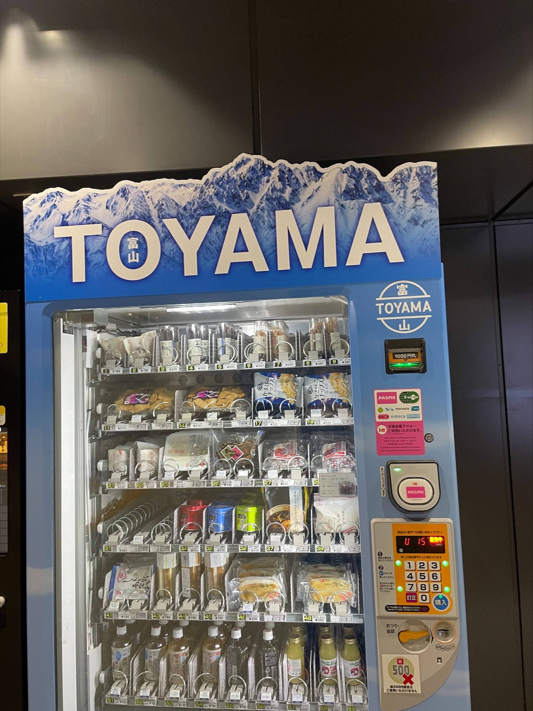
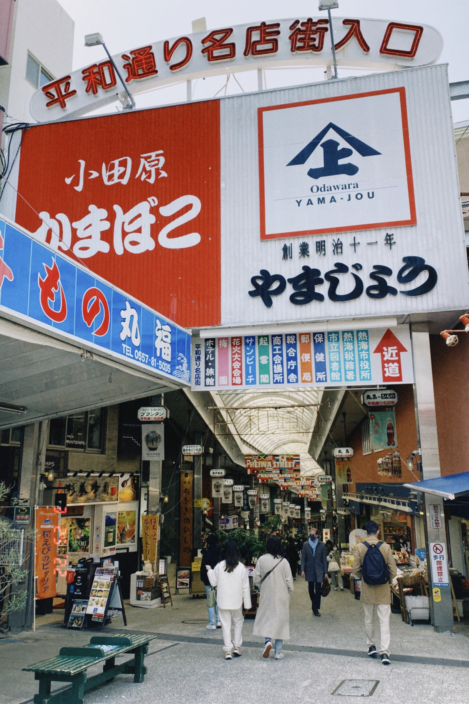
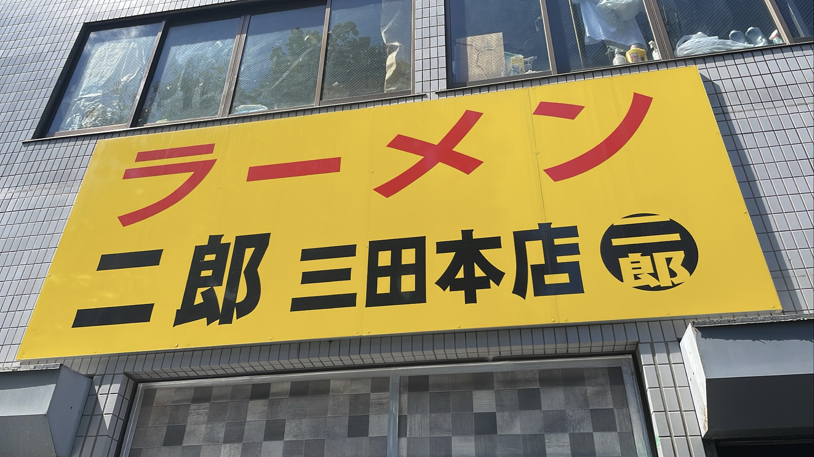

第2回
1

私の地元である富山県の特産品が、大手町駅の地下に自動販売機になって売られていた。
自動販売機のデザインも立山連峰になっており、懐かしさを感じさせられた。（8月14日撮影）
2

この写真は私が熱海駅で撮った写真だ。
昔ながらの商店街、名産の海産物の看板に目を引かれ、思わず撮影した。
（3月25日撮影）
3

この写真は私がラーメン二郎三田本店で撮った写真だ。
視界に飛び込んでくる赤色と黄色と黒色の看板。
この店のラーメンの刺激的なにんにくと大量の背油とマッチしている。